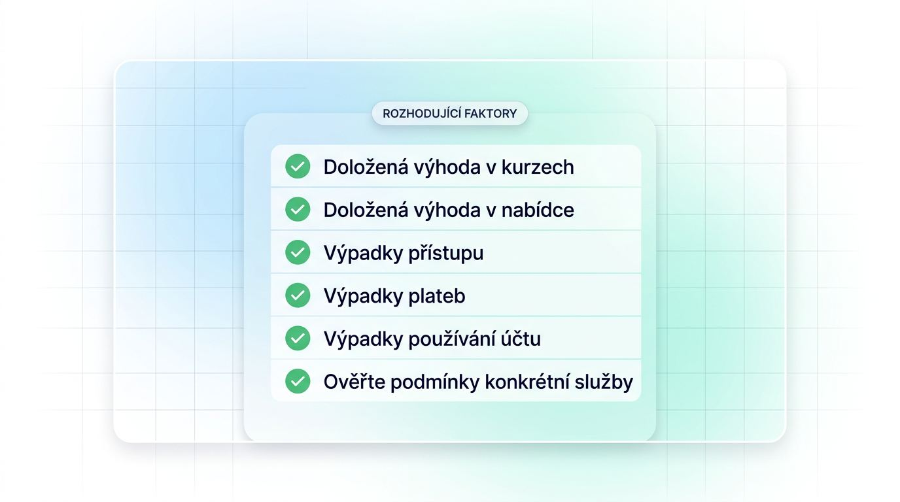
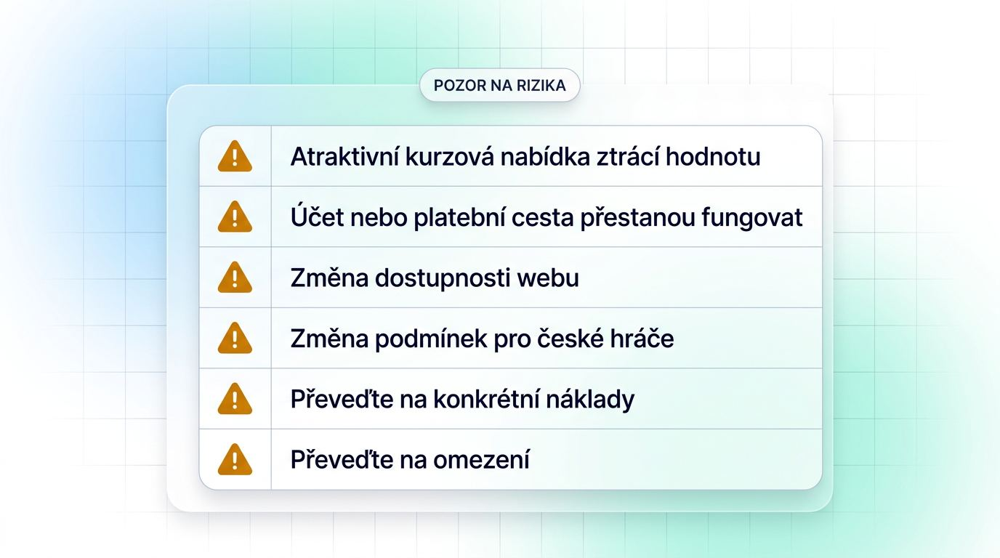

Jak se liší zahraniční sázkové kanceláře pro české hráče

O dostupnosti účtu v Česku a jeho právním postavení rozhodují podmínky provozovatele, česká hazardní licence a možnost registrace z České republiky. Srovnání zahraničních sázkových kanceláří proto odděluje původ značky, českou hazardní licenci a aktuální možnost registrace z České republiky. Po letech 2022 až 2024 se rozšířila nabídka zahraničních značek s českým povolením, takže čeští hráči mají širší výběr i bez hledání nelicencovaných alternativ.
| Kategorie | Přístup z Česka | CZK a podpora | Účet a nabídka |
|---|---|---|---|
| Zahraniční značka s českou licencí | Registrace určená pro český trh | Obvykle CZK a čeština | Domácí soutěže, místní platební metody, podmínky pro ČR |
| Mezinárodní provozovatel přijímající rezidenty ČR | Závisí na aktuálních podmínkách země | CZK či angličtina mohou chybět | Kurzy, limity a výběry se liší podle účtu |
| Omezený nebo nepovolený provozovatel | Registrace či přístup mohou být omezené | Lokalizace nemusí odpovídat účtu | Nejisté podmínky přístupu a řešení sporů |
Pro zahraniční sázkové kanceláře pro Čechy porovnávejte konkrétní podmínky účtu.
Zahraniční značky s přístupem na český trh
České rozhraní nebo nabídka domácí ligy mohou usnadnit každodenní používání, způsobilost registrace však potvrďte samostatně. U online zahraničních sázkových kanceláří ověřujte údaje, které uvidíte ještě před prvním vkladem. Platby v českých korunách a používání domácích bank patří mezi běžné preference českých hráčů.
- Formulář přijímá českou adresu, telefonní číslo a doklady bez výjimek uvedených v podmínkách.
- Účet umožňuje vedení v CZK nebo předem jasně uvádí pravidla přepočtu měny.
- Zahraniční sázkové weby mají české stránky, případně srozumitelnou anglickou navigaci a dosažitelnou zákaznickou podporu.
- Nabídka zahrnuje FORTUNA:LIGU a Tipsport extraligu s dostatkem předzápasových trhů.
- Vklad, historie tiketů i kontaktní kanál podpory fungují v rozhraní dostupném pro české hráče.
Tyto znaky usnadní orientaci v účtu, ale aktuální přístup vyžaduje samostatnou kontrolu podmínek.
Mezinárodní přístup se může změnit
Přijímání českých rezidentů představuje aktuální provozní podmínku, která se může změnit i po založení účtu. Zahraniční sázkové kanceláře bez české licence mohou upravit seznam podporovaných zemí, registraci nebo dostupnost domény.
- Zkontrolujte doložku o způsobilých zemích přímo v obchodních podmínkách.
- Ověřte, zda registrace z Česka probíhá bez omezení uvedeného provozovatelem.
- Prověřte doménu v oficiálních zdrojích Ministerstva financí.
- Sledujte, zda se mezi nelegální zahraniční sázkové kanceláře nedostala používaná doména.
Jak hodnotit spolehlivost zahraniční sázkové kanceláře

Důvěru při odeslání peněz a dokladů vytvářejí dohledatelné údaje o licenci, podmínkách účtu a historii řešení problémů. Bezpečné zahraniční sázkové kanceláře posuzujte podle dokumentovaných pravidel provozovatele, vlastního ověření rozhraní a opakujících se vzorců ve stížnostech. České zkušenosti často zmiňují omezení účtů, zpožděné výplaty, dodatečné KYC a změny bonusových podmínek.
- Ověřte licenci a orgán dohledu v jeho vlastním registru.
- Prostudujte pravidla bonusu, výběrů, omezení a ukončení účtu.
- Zjistěte, zda provozovatel nabízí nástroje pro odpovědné hraní.
- Oddělte jednotlivé uživatelské zkušenosti od opakovaných stížnostních vzorců.
- Kontaktujte podporu s konkrétním dotazem na účet, doklady nebo limity.
Kontrola licence a reputace
Licenci ověřte nejprve přímo u regulátora, protože údaj v patičce bez čísla, platnosti a vydavatele pro rozhodnutí nestačí. Česká licence pro sázkové kanceláře, maltská, curaçaoská a gibraltarská licence představují rozdílné režimy dohledu, práce se stížnostmi a ochrany prostředků. Recenze zahraničních sázkových kanceláří pak použijte pro hledání opakujících se problémů.
- Na whitelistu Ministerstva financí ČR vyhledejte provozovatele, pokud uvádí českou licenci. Tento přehled zahrnuje licencované sázkové kanceláře v Česku.
- U zahraniční licence ověřte vydavatele, číslo licence, platnost a oficiální kontakt regulátora.
- Zjistěte, jak regulátor přijímá stížnosti a zda existuje ADR, tedy alternativní řešení sporů mimo soud.
- Porovnejte diskuse o výběrech, změnách podmínek a dostupnosti pro české rezidenty v delším období.
- Berte jednotlivou stížnost jako podnět k ověření.
Podmínky ovlivňující účet a peníze
Po připsání prostředků na účet mohou pravidla ověření a výběru ovlivnit Vaše peníze více než původní výše bonusu. Rizika sázení u nelicencovaných bookmakerů se často projeví právě ve chvíli, kdy provozovatel vyžaduje další doklady nebo uplatní omezení účtu. I při legálním sázení u zahraničního bookmakera si proto vyhledejte přesné znění těchto ustanovení.
- Při registraci: ověření totožnosti, věková hranice, země bydliště a shoda údajů.
- Při bonusu: definice bonusového zneužití, povolené sázky a omezení výher.
- Při KYC ověření: seznam dokladů, dodatečné KYC ověření a AML kontrola původu prostředků.
- Při výběru: shoda jména s platební metodou, poplatky, limity a možné omezení způsobu výplaty.
- Při ukončení účtu: diskreční právo sázkové kanceláře účet omezit nebo uzavřít, včetně pravidel pro VPN a proxy služby.
- Při neaktivitě: poplatky za neaktivitu nebo transakce, pokud je podmínky připouštějí.
Nejasná formulace o jednostranném omezení účtu vyžaduje další ověření před vkladem.
Kurzy, limity a funkce, které určují hodnotu sázení

Hodnotu nabídky určují dostupné sázkové trhy a možnost přijmout požadovanou sázku. Kurzy zahraničních sázkových kanceláří porovnávejte spolu s limity, výplatním limitem a hloubkou nabídky pro české soutěže. Růst live a mobilního sázení v ČR zvyšuje význam stability aplikace a rychlosti aktualizace dat.
| Oblast | Co porovnat | Praktický dopad |
|---|---|---|
| Předzápasové sázky | Stejné kurzy a maximální vklad | Zjistíte hodnotu dostupnou pro Vaši částku |
| Sázkové trhy | FORTUNA:LIGA, hokej, reprezentace | Rozlišíte široký katalog od užitečné hloubky |
| Live nabídka | Rychlost změn kurzů a dostupné trhy | Ovlivní provedení sázek během zápasu |
| Mobilní použití | Stabilita tiketu při vytížené události | Snižuje riziko neúspěšného odeslání sázky |
Kurzy, marže a sázkové limity
Udržitelnou hodnotu zjistíte porovnáním stejného trhu na stejné události ve stejný čas. Kurzová marže představuje zabudovaný procentní rozdíl mezi souhrnem pravděpodobností srovnatelného trhu a férovou cenou. Kurzová marže bookmakerů dává smysl při porovnání totožných sázek.
- Porovnejte domácí fotbalový nebo hokejový zápas u více sázkových kanceláří ve stejném okamžiku.
- Sečtěte pravděpodobnosti odvozené z kurzů na všechny výsledky trhu, abyste odhadli marži.
- Ověřte maximální vklad před potvrzením tiketu a výplatní strop pro daný typ sázky.
- Sledujte podmínky limitů po úspěšném sázení, zejména zda provozovatel uvádí individuální omezení.
- Hodnoťte kurz podle částky, kterou kancelář skutečně přijme.
Sázkové trhy a zážitek z live sázení
Nabídka domácího fotbalu a hokeje ukáže, zda sázkové kanceláře odpovídají českým sázkovým zvyklostem. U FORTUNA:LIGY a Tipsport extraligy sledujte hloubku trhů před zápasem i během něj, poté posuzujte live sázky a mobilní provedení.
- Ověřte počet relevantních trhů na výsledek, góly, hráčské události a období zápasu.
- Zkontrolujte rychlost obnovování kurzů při live bettingu a četnost dočasně uzavřených trhů.
- Bet Builder umožňuje spojit více voleb z jedné události, jeho dostupnost se však liší podle sportu a zápasu.
- Cash Out umožňuje předčasné vypořádání tiketu, pokud jej provozovatel pro danou sázku nabízí.
- Vyzkoušejte stabilitu mobilního webu nebo aplikace při vytíženém utkání.
Zahraniční sázkové stránky mohou globálně zobrazovat funkce, které účet českého rezidenta kvůli regionálním podmínkám neuvidí.
Uvítací bonusy a promo akce podle skutečné hodnoty
Bonus má použitelnou hodnotu pouze tehdy, když je dostupný pro českého rezidenta a jeho podmínky lze realisticky splnit. Zahraniční sázkové bonusy posuzujte v pořadí způsobilost, kvalifikace, protočení, časový limit a výběr. Nejvyšší uvítací bonus za registraci proto nemusí přinést nejvyšší částku, kterou lze skutečně vybrat.
| Typ promo akce | Kvalifikace | Podmínky protočení | Expirace |
|---|---|---|---|
| Bonus za vklad | Vklad a případně kód | Násobek bonusu či vkladu | Krátké období podle podmínek |
| Free Bet | Kvalifikační sázka nebo vklad | Minimální kurz a omezené trhy | Obvykle pevně stanovený termín |
| Zvýšený kurz | Vybraná událost | Limit vkladu a maximální výhra | Platí pro konkrétní promo |
| Refundace sázky | Určený tiket | Pravidla pro vrácený kredit | Často časově omezená |
Běžné formáty sázkových bonusů
Jednotlivé bonusové formáty přinášejí rozdílnou hodnotu podle toho, na jaké sázky je lze použít. Při hazardní hře sledujte praktické použití nabídky.
- Dorovnání vkladu: bonus za vklad navyšuje účet, obvykle však vyžaduje splnění sázkových podmínek.
- Free Bet: bonusová sázka poskytuje stanovenou částku na tiket, často s minimálním kurzem a omezeným termínem.
- Sázka zdarma: může fungovat jako odměna po kvalifikační sázce, přičemž se často nevrací původní vklad.
- Bonus bez vkladu: umožňuje vyzkoušet nabídku bez platby, ale výběr výher bývá omezen pravidly promo akce.
- Refundace: vrací část ztráty z vybraných sázek jako kredit, který může podléhat dalším podmínkám.
- Zvýšení kurzu: zvyšuje cenu vybrané sázky za stanovených pravidel a s limitem vkladu.
- Reload promo akce: opakovaný bonus může být týdenní, avšak další čerpání může vyžadovat splnění předchozích sázkových podmínek.
Podmínky, které mění hodnotu bonusu
Zdánlivě štědrý bonus může ztratit většinu hodnoty při samotném sázení nebo při výběru, pokud předem neprověříte jeho pravidla. Zahraniční sázkové bonusy aktivujte až po potvrzení, že je promo akce určena i českému rezidentovi.
- Zjistěte požadavek na protočení bonusu nebo vkladu.
- Ověřte povolené sporty, sázkové trhy, minimální kurz a případný minimální počet událostí na tiketu.
- Zkontrolujte dobu platnosti, zacházení s vráceným vkladem a maximální částku převoditelnou na vybratelný zůstatek.
- Přečtěte omezení výběru a pravidla pro zrušení promo akce.
Platby a výběry pro české hráče

Při volbě platební cesty ověřte podporu CZK a možnost výběru peněz po ověření účtu. U vkladů a výběrů u zahraničních sázkových kanceláří porovnejte dostupnost metody pro českého rezidenta, limity, měnové náklady a požadavky KYC.
| Kategorie metody | Měnová vhodnost | Ověření | Charakteristika výběru |
|---|---|---|---|
| Platební karta | Záleží na podpoře CZK a kurzu banky | Obvykle shoda jména | Některé účty vyžadují návrat peněz stejnou cestou |
| Bankovní převod | Vhodný při účtu v CZK | Často podrobnější kontrola | Doba zahrnuje zpracování provozovatelem i bankovní připsání |
| Elektronická peněženka | Záleží na dostupnosti pro účet | Ověřený účet na stejné jméno | Skrill a Neteller mohou mít vlastní limity a poplatky |
| Metoda jen pro vklad | Měna podle poskytovatele | Základní ověření | Výběr výher u zahraničního bookmakera nemusí podporovat |
Uváděná rychlost výplaty výher často označuje pouze dobu zpracování provozovatelem.
Vklady a práce s měnou
Účet vedený v českých korunách může omezit zbytečné přepočty a zpřehlednit zůstatek, vyžaduje však kontrolu poplatků a dostupnosti metody. Platby v českých korunách ověřte přímo po přihlášení, protože nabídka se může lišit podle rezidence a typu účtu.
- Zjistěte, zda účet podporuje CZK pro vklad i výběr.
- Porovnejte akceptaci karet, bankovního převodu, Skrillu a Netelleru pro českou adresu.
- Oddělte poplatek sázkové kanceláře od poplatku poskytovatele platby a nákladů na měnovou konverzi.
- Prověřte rychlost připsání a dokumenty požadované před prvním vkladem.
- Počítejte s tím, že bankovní interní pravidla mohou způsobit platební blokace hazardních transakcí a omezit financování účtu.
Podporu vkladu i výběru ověřte u stejné platební metody dříve, než odešlete peníze.
Spolehlivost výběrů a ověření
Provozovatel může inzerovanou rychlost výplaty dodržet až po splnění podmínek způsobilosti a KYC ověření. Výběr výher u zahraničního bookmakera proto připravte dříve, než na účtu vznikne vyšší zůstatek.
- Dokončete ověření totožnosti a zkontrolujte shodu jména na účtu a použité platební metodě.
- Uložte si doklad totožnosti, potvrzení adresy, doklad o platební metodě a historii transakcí pro případ vyšší výplaty.
- Ověřte podporované metody výběru, minimální a maximální limity i případné výplatní limity.
- Rozlišujte zveřejněnou dobu zpracování od skutečné doby připsání peněz.
- Projděte opakované stížnosti hráčů na zdržované doklady, nejasné limity a blokace plateb u sázkových kanceláří s různými licencemi.
Pravidla přístupu z Česka a praktická rizika účtu

Pro rychlou oficiální kontrolu před registrací nebo vkladem použijte whitelist a blacklist Ministerstva financí. Whitelist slouží k ověření českého povolení, zatímco blacklist ukazuje domény zařazené mezi nepovolené internetové hry podle zákona o hazardních hrách.
- DNS blokace nelegálních webů znamená, že poskytovatelé připojení v Česku omezují přístup k doménám uvedeným na seznamu Ministerstva financí. Ústavní soud ČR ústavnost tohoto rámce potvrdil.
- Změna dostupnosti může zkomplikovat přístup k účtu, komunikaci se zákaznickou podporou i správu zůstatku.
- Platební omezení mohou ovlivnit financování účtu nebo výběr, i když provozovatel platbu v rozhraní nabízí.
- VPN a proxy služby mohou porušit podmínky provozovatele a zhoršit Vaši pozici při reklamaci nebo výběru.
- U nelicencovaného subjektu řešíte přeshraniční spor podle zahraniční licence, regulátora nebo dostupného ADR. České mechanismy ochrany spotřebitele zde nemusí být použitelné.
- Rizika sázení u nelicencovaných bookmakerů zahrnují i možnost postihu ze strany Finančního úřadu při účasti na nepovolených hazardních hrách.
- Daňová rezidence českého sázkaře ovlivňuje zdanění výher ze sázení. Při individuálně významné výhře ověřte aktuální daňové zacházení u oficiálního zdroje.
Kontrola před vkladem: Před odesláním peněz ověřte aktuální stav provozovatele na whitelistu a domény na blacklistu Ministerstva financí.
Legální sázení u zahraničního bookmakera vyžaduje aktuální české oprávnění.
Nástroje pro zodpovědné sázení a kontrolu účtu
Nástroje kontroly účtu rozhodují o tom, zda dokážete předem omezit vklady, ztrátu a čas věnovaný sázení. U bezpečné zahraniční sázkové kanceláře je vyhledejte ještě před pravidelným používáním účtu, protože jejich rozsah se mezi licencemi a účty liší.
- Limit vkladu: Umožňuje předem stanovit částku, kterou můžete v určitém období vložit.
- Limit prohry: Hlídá kumulované ztráty a pomáhá zastavit další sázky po dosažení vlastní hranice.
- Limit času ve hře: Omezuje dobu přihlášení nebo aktivního sázení.
- Kontrola reality: Připomíná délku hraní a aktuální pohyb na účtu.
- Časová pauza: Dočasně zablokuje přístup k účtu na zvolenou dobu.
- Sebevyloučení: Zajišťuje delší omezení přístupu a patří mezi sebeomezující opatření.
- Podpora při problémech: Ověřte dostupnost kontaktu pro hráče, kteří ztrácejí kontrolu nad hazardní hrou.
Česká regulace klade důraz na limity, sebehodnotící testy a sebevyloučení, obdobné nástroje pro zodpovědné hraní však zahraniční účty nemusí nabízet ve stejné podobě.
Nejčastější otázky o zahraničních sázkových kancelářích v Česku
Následující stručné odpovědi se týkají účtů, ověření a přeshraniční dostupnosti a doplňují srovnání zahraničních sázkových kanceláří.
Může mít český hráč účet u více zahraničních sázkových kanceláří?
Ano, pokud každý provozovatel přijímá české hráče a jeho podmínky více účtů umožňují. U stejné sázkové kanceláře bývají duplicitní účty zakázány, proto ověřte pravidla registrace.
Jaké doklady si uložit před žádostí o vyšší výběr?
Uložte si občanský průkaz nebo pas, potvrzení adresy, doklad o vlastnictví platební metody a potvrzení transakcí. Pro výběr výher u zahraničního bookmakera používejte pouze zabezpečený kanál provozovatele.
Co dělat, když zahraniční sázková kancelář odmítne KYC ověření?
Vyžádejte si od podpory konkrétní důvod odmítnutí a postup opravy. Zkontrolujte shodu údajů, čitelnost dokladů a vlastní platební metodu; další stížnost řešte podle podmínek licence nebo ADR.
Mohou čeští hráči využívat slovenské sázkové kanceláře?
Pouze pokud provozovatel aktuálně přijímá rezidenty České republiky a má potřebné české oprávnění. Slovenská licence ani jazyk nestačí, ověřte whitelist Ministerstva financí i blacklist domény.